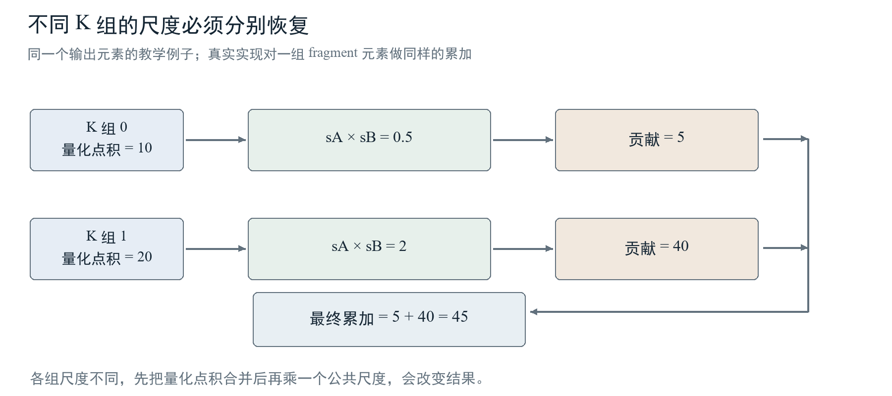

手写 PTX 附有汇编器版本和对应的反汇编。寄存器数与溢出统计可以在离线编译时取得；算子耗时和实际吞吐率需要设备测量。
代码块旁的行号链接指向本课采用的提交，仓库及许可见课末。
1 算子的输入、输出与布局
假设一个推理引擎的线性层在某些请求上耗时突出。接手优化时，先拿到真实调用的 M、N、K、dtype、stride、调用频率和允许误差。prefill 中的大 M、decode 中的小 M、MoE 中每个专家不同的 token 数，会把同一个 GEMM 推向不同执行配置。单独优化 4096×4096 方阵，不能代替对线上形状分布的分析。
本课沿两条相互连接的线索展开。softmax 用来理解归约、融合和边界值；GEMM 用来理解指针、布局、分块与流水线。源码从 CUDA Samples、Triton、TileLang、CUTLASS、cuTile、ThunderKittens 和 DeepGEMM 的本地克隆提取，逐段标注固定提交和行号。本课完成源码阅读与可复算推导，不把这些材料写成已经运行过的 GPU 性能实验。
一个 GEMM 调用需要保留的信息
| 对象 | 必须明确的约定 | 遗漏后可能发生的错误 |
|---|---|---|
| 输入 A、B | 逻辑形状、dtype、设备、stride、对齐 | 转置 view 被当成连续数组读取 |
| 输出 C | 形状、dtype、是否与输入别名、是否累加旧 C | 尚未完成的输入被写回覆盖 |
| 数学操作 | AB、ABᵀ，是否带 alpha、beta、bias、激活 | 接口同名但实际计算不同 |
| 边界 | 空张量、最小维度、尾块、非法输入处理 | 越界访问或遗漏最后一块 |
| 数值与执行 | 累加精度、误差容限、stream、临时缓冲寿命 | 结果接近却不满足用途，或出现异步竞争 |
两个输入 view 即使形状相同，也可能引用同一块 storage 的不同区域。一个支持原地更新的实现要说明允许哪些重叠；若输出先覆盖另一线程尚未读的输入，单线程参考仍可正确。比对内核前固定 shape、stride、偏移、dtype 以及输入输出别名关系。
↑ 返回知识点目录1.1 形状、步长与地址
行主序 A[M,K] 的连续 stride 为 (K,1)，元素 A[i,k] 的元素偏移为 iK+k。若实际底层存放的是行主序 X[K,M]，A=Xᵀ 的逻辑形状仍是 [M,K]，stride 却变为 (1,M)。转置 view 不要求搬动数据；按 iK+k 读取会拿错元素。stride 的单位通常是元素，计算字节地址时还要乘 sizeof(dtype)。
取 M=2、K=3，X 的线性存储为 [0,1,2,3,4,5]，形状 [3,2]。A=Xᵀ 的两行为 [0,2,4] 与 [1,3,5]。A[1,2] 的元素偏移是 1×1+2×2=5；若错误使用连续 [2,3] 的地址，A[0,1] 会读到 1，正确值应为 2。这个六元素例子比只检查大随机矩阵更容易暴露布局错误。
一个张量视图要靠形状、步长和起点描述。以行主序的 3×4 FP32 为例，底层依次存 0 至 11。从第二列取出三行两列得到起点 1、形状 [3,2]、步长 [4,1]。逻辑元素 [2,1] 距原存储起点 1+2×4+1=10 个元素，即 40 B。转置视图变成形状 [2,3]、步长 [1,4]，底层字节没有移动。让相邻 lane 沿最后一维读时，转置前后二者的地址间距分别为 4 B、16 B。调用连续内核前，应辨明指针已经指向视图首址还是底层首址，以免把 offset 加两次。
情境 底层一维数组是按行保存的 3×4 FP32 矩阵，元素值等于底层下标 0…11。取原矩阵列 1、2（零基），不拷贝即转置得到形状 [2,3] 的视图。内核参数指针已指向底层下标 1，stride 以元素为单位。
问题 从坐标 [1,0]、[1,1]、[1,2] 分别算相对该指针的偏移与期望读值。若内核用行主序连续公式 i×3+j，实际读什么？若复用正确 stride 却又手动加一次 storage offset，会读什么？
答案
结论 正确相对偏移为 1、5、9，值为 2、6、10。连续寻址读到 4、5、6；重复加起点读到 3、7、11。
推导 视图的 [i,j] 对应原矩阵 [j,i+1]。原底层下标是 4j+i+1；减去指针已携带的起点 1，剩 4j+i。
错误连续公式对第 1 行给 3、4、5，再加指针底层位置 1。另一错误保持跨行距离正确，只整体平移一个元素；对照三个点即可区分两种故障。
2 Warp 内归约
softmax 需要先求行最大值，再求指数之和。归约将多个输入合成更少的输出，改变了“一线程一个输出”的简单映射。对求和而言，可让每线程先处理多个元素得到局部和，再在 warp 内合并，必要时跨 warp、跨 block 继续归约。每一级都要说明结果由谁持有、参与者是否完整、数据何时可读。
代码 1 完整 warp 的 shuffle 求和辅助函数
template <class T> __device__ __forceinline__ T warpReduceSum(unsigned int mask, T mySum)
{
for (int offset = warpSize / 2; offset > 0; offset /= 2) {
mySum += __shfl_down_sync(mask, mySum, offset);
}
return mySum;
}在本节先限定 32 个 lane 都参与，mask 为完整 warp 的掩码。offset 依次为 16、8、4、2、1。每个 lane 取到编号更大的另一个 lane 的寄存器值，再加到自己的局部值中。shuffle 完成 warp 内寄存器交换，不需要为每次交换写入 shared memory。
若 lane l 的初值为 l+1，第一轮 lane 0 得到 1+17=18；第二轮加上 lane 8 已持有的 9+25=34，得到 52；随后依次得到 120、256、528。最终 lane 0 持有 1 到 32 的总和。其他 lane 并不全都持有完整总和，因此写回必须选定正确的持有者。
mask 规定参与同步的 lane 集合，不会自动把未参与 lane 的数据填成零。若 source lane 不参与相应 shuffle，不能把其返回值当成有效输入。把这个完整 warp 的例子改成“只有前 8 个 lane 调用”，却继续照搬 16、8、4、2、1 的所有读取，缺少正确性依据。安全设计可保留完整 warp 参与，把逻辑无效输入置为加法单位元零，或采用明确支持该参与集合的归约算法。
跨 warp 合并时，256 线程 block 先得到 8 个 warp 局部和，由各 warp 的代表写入 shared。block 屏障后，第一个完整 warp 读取这 8 个值，其余 24 个 lane 用零填充，再完成一次 warp 归约。跨 block 则通常把部分和写入中间数组，交给后续 kernel；一个普通 __syncthreads 不能同步整个 grid。
归约操作决定填充值：sum 用 0，max 用负无穷，min 用正无穷，product 用 1。改变归约树也会改变浮点加法顺序；整数示例的精确结果不能保证浮点输入逐位相同。后面 softmax 的减最大值、掩码和误差标准，都来自这些约束。
若一行只有 20 个有效元素，但仍用完整 warp 参加 shuffle 归约，可让其余 lane 的寄存器装入求和单位元 0，同时按指令参与契约运行。若改成只有部分 lane 参与，则需检查掩码及每一次 shuffle 的源 lane 是否存在。两种处理不能把无效数据与未参加的线程混作一件事。
↑ 返回知识点目录2.1 手写 PTX 向量内核
PTX 是虚拟指令集。CUDA C++ 前端可以生成 PTX；ptxas 针对某个真实目标生成 cubin；驱动在适用情况下也可把随程序分发的 PTX JIT 为机器代码。SASS 是在目标架构上执行的机器指令。下面从源文件开始手写 AXPY：对每个有效 i 输出 out[i]=alpha×x[i]+y[i]。数组为连续 FP32，x、y 和 out 指向三个独立的设备缓冲。
将以下完整代码保存为 axpy.ptx。.version 是语法版本，.target 声明虚拟程序所需的目标能力，.address_size 指定地址宽度。.entry 声明可从主机启动的入口。三个 .u64 参数传设备地址；n 和 alpha 分别是无符号 32 位数与 FP32。ld.param 先读参数值，ld.global 才访问这些地址所指向的数组。
PTX 实验一 完整 AXPY 内核
.version 7.0
.target sm_80
.address_size 64
.visible .entry axpy(
.param .u64 x_ptr, .param .u64 y_ptr, .param .u64 out_ptr,
.param .u32 n_val, .param .f32 alpha_val
)
{
.reg .pred %p;
.reg .b32 %r<5>;
.reg .b64 %rd<8>;
.reg .f32 %f<5>;
ld.param.u64 %rd0, [x_ptr];
ld.param.u64 %rd1, [y_ptr];
ld.param.u64 %rd2, [out_ptr];
ld.param.u32 %r0, [n_val];
ld.param.f32 %f0, [alpha_val];
mov.u32 %r1, %ctaid.x;
mov.u32 %r2, %ntid.x;
mov.u32 %r3, %tid.x;
mad.lo.u32 %r4, %r1, %r2, %r3;
setp.ge.u32 %p, %r4, %r0;
@%p bra DONE;
mul.wide.u32 %rd3, %r4, 4;
add.u64 %rd4, %rd0, %rd3;
add.u64 %rd5, %rd1, %rd3;
add.u64 %rd6, %rd2, %rd3;
ld.global.f32 %f1, [%rd4];
ld.global.f32 %f2, [%rd5];
fma.rn.f32 %f3, %f0, %f1, %f2;
st.global.f32 [%rd6], %f3;
DONE:
ret;
}以 blockIdx.x=2、blockDim.x=256、threadIdx.x=7 为例，mad.lo 得 i=519；若 n=520 就访问元素 519，若 n=519 则跳到 DONE。按无符号 32 位计算索引，本实验限制总索引不溢出这一范围。字节位移用 mul.wide.u32 生成 64 位结果，再与 64 位基址相加。若把 4i 留在 32 位中，超过 4 GiB 的字节位移可能回绕。
情境 AXPY 入口处理 n=520 个 FP32 元素。一个 block 含 256 线程，i=256×blockIdx.x+threadIdx.x；x[0] 位于字节地址 0x100000，y 同样只有 520 项。检查 i<n 才可执行本次的两个读取及一个写回。
问题 为 block 2 中 thread 7、8 各写出 i、条件真假。对合法线程算元素偏移、字节偏移及十六进制地址；若仅对越界线程屏蔽最后的 store，它此前可能访问哪个非法下标？
答案
结论 thread 7 处理 i=519，字节偏移 2076，即 0x81C，读取 0x10081C。thread 8 的 i=520，必须跳过该元素的读和写。
推导 512+7=519 是最后一个有效元素，地址计算需将元素编号乘 4。512+8 已等于数组长度，x[520] 和 y[520] 的读取同样越界。
边界判断可统一放在访存前，也可让每次 load/store 都受正确谓词保护，输出没有写坏不能证明越界读没有发生。
2.2 PTX 汇编与 SASS 反汇编
下面的命令在当前目录使用 NVIDIA CUDA Toolkit 的工具。汇编与反汇编可在没有 NVIDIA GPU 的电脑上执行。运行 kernel 则需要兼容 GPU、驱动与运行时。nvcc --ptx 能将 CUDA C++ 转为 PTX；已有手写 .ptx 时直接使用 ptxas。cubin 适合固定目标，分发多个目标时需让驱动可选到合适的映像。
终端 构建并读取两个实验的机器代码
ptxas --version
ptxas -arch=sm_80 -v axpy.ptx -o axpy_sm80.cubin
nvdisasm -c axpy_sm80.cubin
ptxas -arch=sm_80 -v warp_mma.ptx -o warp_mma_sm80.cubin
nvdisasm -c warp_mma_sm80.cubin本机以 NVIDIA ptxas 13.2.51 对上页原文汇编，报告每线程 12 个寄存器、stack frame 为 0 B、spill load/store 均为 0 B。下面是同一 cubin 的连续反汇编。S2R 读取硬件特殊寄存器，IMAD 计算索引或宽地址，谓词控制越界退出。两条 LDG.E 读取 x、y，FFMA 做一次融合乘加，STG.E 写结果。SASS 直接引用常量区的参数也很常见，并非每条 ld.param 都会变成一条独立访存。
本机 nvdisasm 从线程 ID 到结果写回
/*0010*/ S2R R6, SR_CTAID.X ;
/*0020*/ S2R R3, SR_TID.X ;
/*0030*/ IMAD R6, R6, c[0x0][0x0], R3 ;
/*0040*/ ISETP.GE.U32.AND P0, PT, R6, c[0x0][0x178], PT ;
/*0050*/ @P0 EXIT ;
/*0060*/ HFMA2.MMA R7, -RZ, RZ, 0, 2.384185791015625e-07 ;
/*0070*/ ULDC.64 UR4, c[0x0][0x118] ;
/*0080*/ IMAD.WIDE.U32 R2, R6, R7, c[0x0][0x160] ;
/*0090*/ IMAD.WIDE.U32 R4, R6.reuse, R7.reuse, c[0x0][0x168] ;
/*00a0*/ LDG.E R2, [R2.64] ;
/*00b0*/ LDG.E R5, [R4.64] ;
/*00c0*/ IMAD.WIDE.U32 R6, R6, R7, c[0x0][0x170] ;
/*00d0*/ FFMA R9, R2, c[0x0][0x17c], R5 ;
/*00e0*/ STG.E [R6.64], R9 ;
/*00f0*/ EXIT ;.rn 表示 round-to-nearest-even；fma.rn.f32 将乘法与加法融合，仅对最终值进行一次舍入。以一般浮点数据校验时，要么使用相同融合语义生成参考值，要么明确误差容限。显式声明多少个 PTX 虚拟寄存器并不能直接推出物理寄存器数：后端还会做活跃区间分析、寄存器复用、指令选择与调度。
CUDA Binary Utilities · nvdisasm
情境 拿到两份静态材料：AXPY 的 SASS 列出每个有效线程两个 4 B 全局 load 和一个 4 B 全局 store；另一个矩阵核的 SASS 有 HMMA。没有 trace、计数器、输入样例和执行时间。评审表要求填写算法字节/元素、实测带宽、矩阵吞吐和最大绝对误差。
问题 先标出四项中可直接填写的一项，给出其单位。其他三项各需补什么分子、分母或参考结果？怎样防止把矩阵核的指令证据错误归到 AXPY？
答案
结论 静态可填 AXPY 每个有效元素 12 B 的算法载荷。实测带宽需目标实例 DRAM 字节/用时；数学吞吐需矩阵有效工作量/同一实例用时；误差需实际输出与参考输出。
推导 AXPY 的两读一写共 4+4+4 B，实际 DRAM 可能受缓存和事务合并影响。静态 HMMA 只说明矩阵二进制中存在相应指令。
运行时以函数符号、设备、launch 配置及对应二进制锁定实例。最后用相同输入和输出坐标计算 max abs error；只看反汇编无法替代数值检查。
2.3 Warp 级矩阵乘加指令
将下列文件保存为 warp_mma.ptx。只发射一个 block、恰好 32 个线程，out 至少有 128 个 FP32 且首地址按 16 B 对齐。每 lane 的寄存器 %one 打包两个 FP16 的 1（各为 0x3c00），将 16×16 的 A 和 16×8 的 B 的所有输入 fragment 填为 1。每个 lane 贡献规定数量的寄存器，整个 warp 共同计算一个 16×8 的 D，C 初始化为 0。
PTX 实验二 以常量 fragment 验证一条 warp MMA
.version 7.0
.target sm_80
.address_size 64
.visible .entry ones_mma(.param .u64 output_ptr)
{
.reg .b32 %lane, %one;
.reg .b64 %base, %offset, %address;
.reg .f32 %zero, %d<4>;
ld.param.u64 %base, [output_ptr];
mov.u32 %lane, %laneid;
mov.b32 %one, 0x3c003c00;
mov.f32 %zero, 0f00000000;
mma.sync.aligned.m16n8k16.row.col.f32.f16.f16.f32
{%d0,%d1,%d2,%d3},
{%one,%one,%one,%one}, {%one,%one},
{%zero,%zero,%zero,%zero};
mul.wide.u32 %offset, %lane, 16;
add.u64 %address, %base, %offset;
st.global.v4.f32 [%address], {%d0,%d1,%d2,%d3};
ret;
}本例按 lane 编号连续写出其四个累加值，便于逐个检查。总输出是 128 个 16.0，但这种存法是 lane-fragment 转储；若换成任意位置值，恢复二维矩阵需查该形状的 fragment 映射或用配套布局存储。输入全 1 能检查基本通路，定位行列次序应换成逐行或逐列变化的模式。
本机对第二个内核的离线结果为每线程 10 个寄存器，0 B spill，反汇编出现 HMMA.16816.F32 与 128 位 store。下面从 CUDA C++ 侧看同一操作数约束：f 表示 FP32 寄存器，r 表示 32 位整数寄存器，FP16 对以位模式打包在 r 中。PTX 的 row/col、A/B/D/C 类型次序和调用者的 memory layout 共同决定正确性。
代码 3·1 CUTLASS 对 m16n8k16 的 CUDA C++ 内联 PTX 封装
CUTE_HOST_DEVICE static void
fma(float & d0, float & d1, float & d2, float & d3,
uint32_t const& a0, uint32_t const& a1, uint32_t const& a2, uint32_t const& a3,
uint32_t const& b0, uint32_t const& b1,
float const & c0, float const & c1, float const & c2, float const & c3)
{
#if defined(CUTE_ARCH_MMA_SM80_ENABLED)
asm volatile(
"mma.sync.aligned.m16n8k16.row.col.f32.f16.f16.f32 "
"{%0, %1, %2, %3},"
"{%4, %5, %6, %7},"
"{%8, %9},"
"{%10, %11, %12, %13};\n"
: "=f"(d0), "=f"(d1), "=f"(d2), "=f"(d3)
: "r"(a0), "r"(a1), "r"(a2), "r"(a3),
"r"(b0), "r"(b1),
"f"(c0), "f"(c1), "f"(c2), "f"(c3));先读 A 的四个、B 的两个输入寄存器，再把指令模板的占位符与下方约束一一对上。输出与输入累加值分开命名，允许后端在满足活跃区间时安排复用。
PTX ISA · mma 的矩阵形状与 fragment 布局
构造 B 只有 (k,j)=(3,2) 是 1、其余全 0，零初始 C，则 D 的第 2 列应等于 A 的第 3 列，其余列应全零。逐次移动这个 1 可以孤立某个输入片段通道。与全 1 测试结合，既检查乘加次数，又检查列的归属。
情境 一条 warp 矩阵指令计算 [16,16]×[16,8]，零初始累加器。测试者把每个 lane 的 4 个输出寄存器顺序拼成 128 个数，并假定就是矩阵行主序。全 1 输入与 CPU 参考均得到 128 个 16。
问题 构造一组小整数输入，使任意两个不同输出坐标的正确值不同。请给出 A[i,k] 与 B[k,j] 的定义、输出公式，并解释怎样用带 (lane,寄存器序号) 的采样重建坐标，区分乘法错和输出解包错。
答案
结论 可取 A[i,k]=100i+k，B[k,j] 在 k=j 时为 1、其余为 0，故 D[i,j]=100i+j。每个值可标识其行列。
推导 每个输出只选中 A 的第 j 列。记录寄存器的原始 (lane,r,value)，按该指令指定的 fragment 映射放到 [i,j]。
若这样放回后逐项正确，而直接串联不同，错在输出重排；若按文档放回仍错，再查输入片段和乘加。全 1 测试中坐标置换不会改变任何值，无法作此区分。
2.4 PTX 内核的启动与结果校验
以下主机端使用 CuPy 加载前两节生成的 cubin。就地做三个检验：AXPY 带有最后一个未满的 block，输出必须和精确可表示的参考数组一致；MMA 只启一个完整 warp，128 个转储值都应为 16；同步之后再把结果传回 CPU。需要目标设备能执行所选 cubin。当前讲义实测了离线汇编与反汇编，以下设备端校验提供复现实验入口。
Python 将两个 .cubin 放在工作目录后运行
import cupy as cp
import numpy as np
n = 520
x = cp.arange(n, dtype=cp.float32)
y = cp.ones_like(x)
out = cp.full_like(x, np.nan)
axpy = cp.RawModule(path="axpy_sm80.cubin").get_function("axpy")
axpy(((n + 255) // 256,), (256,), (x, y, out, np.uint32(n), np.float32(2)))
dump = cp.full(128, cp.nan, dtype=cp.float32)
mma = cp.RawModule(path="warp_mma_sm80.cubin").get_function("ones_mma")
mma((1,), (32,), (dump,))
cp.cuda.get_current_stream().synchronize()
np.testing.assert_array_equal(cp.asnumpy(out), 2 * np.arange(n, dtype=np.float32) + 1)
np.testing.assert_array_equal(cp.asnumpy(dump), np.full(128, 16, dtype=np.float32))按入口签名次序传参。数组对象传设备地址，n 是恰好 32 位的无符号整数，alpha 是 FP32。预填 NaN 可揭示漏写。若 module 加载失败，先比 target 与驱动支持；若出现非法访问，先核对网格、输出容量、指针的空间及宽度。合法地址并不能证明数学布局正确，还需比较具体元素。
CuPy RawModule · 从 cubin 或 PTX 加载模块
情境 一个 CTA 原有 32 线程，每个 lane 从字节地址 B+16×laneid 起写 4 个 FP32。分配区为 [B,B+512)，laneid 在每个 warp 内从 0 计。只把线程数增加到 64，两个 warp 各自计算一个独立结果，其他代码未改。
问题 写出两个 warp 的 lane 0、lane 31 分别触及的 16 B 区间。判定错误属于越界还是同址争用；给出能观察到覆盖的输入与为两个 warp 各留独立输出的偏移公式。
答案
结论 两个 warp 的 lane 0 都写 [B,B+16)，lane 31 都写 [B+496,B+512)。各自没有越过 512 B，但整段重复写入。
推导 laneid 不包含 warp 编号，两个 warp 都覆盖相同 32 段。分别让第一个 warp 产出标记 1、第二个产出标记 2，并为两组逻辑输出独立检查；全相同的值会掩盖争用。
分配 1024 B，块内 warp 号 w=threadIdx.x/32 取整，写地址为 B+512w+16×laneid。若多 CTA 还须计入 CTA 自己的输出基址。
2.5 内联 PTX 的地址空间与同步
CUDA 指针传入 inline asm 时要确认其空间及宽度。对使用 32 位 shared 地址的操作，先从合法 shared 指针转换到该空间的地址；global 指针通常由 64 位约束传入。命名 %0、%1 等模板操作数时先排输出再排输入；若访问 C++ 模板字符串里的 PTX 特殊寄存器，百分号需要按 inline asm 规则转义。用局部花括号包起临时 PTX 寄存器可避免内联多次的命名冲突。
代码 3·2 ldmatrix 在真实封装中如何接收 shared 地址
CUTE_HOST_DEVICE static void
copy(uint128_t const& smem_src,
uint32_t& dst)
{
#if defined(CUTE_ARCH_LDSM_SM75_ACTIVATED)
uint32_t smem_int_ptr = cast_smem_ptr_to_uint(&smem_src);
asm volatile ("ldmatrix.sync.aligned.x1.m8n8.shared.b16 {%0}, [%1];\n"
: "=r"(dst)
: "r"(smem_int_ptr));
#else
CUTE_INVALID_CONTROL_PATH("Trying to use ldmatrix without CUTE_ARCH_LDSM_SM75_ACTIVATED.");
#endif先看输入地址怎样缩为指令要求的 shared 地址，再看 warp 级 ldmatrix 的结果寄存器。传错地址空间，即使位宽勉强匹配也会访问错误的数据。
谓词分支适合单线程独立的尾部保护；warp 级 mma.sync.aligned、ldmatrix.sync.aligned 或 CTA 屏障各自对参与者有要求。对尾部 tile，通常给越界输入填零，让必要线程按一致控制流执行协作指令，最后屏蔽越界输出。asm volatile 解决编译器消除等问题，memory clobber 约束编译器对内存的假设，跨线程的设备顺序仍需由正确作用域的同步原语、屏障或 acquire/release 协议建立。
NVIDIA Inline PTX Assembly · 约束、地址空间与优化
主机端看到内联汇编出现在生成代码里，只证明编译器保留了它。若另一个线程稍后使用其写入的数据，还要按照线程间共享范围建立设备侧内存顺序和同步。判断一个修复是否生效时，应分别检查指令是否生成、它对其他执行者是否建立了所需的先后关系。
情境 边界 tile 中部分输出超出矩阵，但同一 warp 仍需执行 mma.sync.aligned。这条教学路径要求 32 个 lane 一起运行；只有 20 个 lane 持有至少一个可合法写回的输出。K 维最后一轮也有越界输入项。
问题 审查“没有可写结果的 lane 在 MMA 前直接 return”这项修改。给出加载、MMA、写回三阶段的条件。若同一 lane 同时持有一个合法和一个非法输出，能否仅以 lane 为单位屏蔽 store？
答案
结论 全 warp 协作条件仍要满足。对越界输入屏蔽并为缺失归约项补零，32 个 lane 共同执行指令，按每个输出元素的坐标决定是否写回。
推导 输出所有权不同于输入片段的贡献范围。提前退出可能使协作指令失去必需的参与线程，其他 lane 的合法输出也无法保证。
K 尾项缺失时其乘积应为 0。最终一个 lane 若持混合有效性片段，则每个输出都要独立验范围，或采用已证明所有分量均合法的向量化写。
2.6 Blackwell 的 Cluster Launch Control
考虑 tile 代价不均的稀疏矩阵乘。某个 CTA 已完成本块工作，另一个逻辑块仍在待调度队列。Blackwell 的 clusterlaunchcontrol.try_cancel 可以尝试取消尚未开始的 cluster 的原启动，由当前工作者接手其逻辑工作。它是异步请求，结果以 16 B 不透明对象写入 shared memory，并经 mbarrier 通知；它不会中断正在执行的 CTA。
代码 3·3 CCCL 的 try_cancel 封装
uint64_t* smem_bar);
*/
#if __cccl_ptx_isa >= 860
template <typename = void>
_CCCL_DEVICE_API void clusterlaunchcontrol_try_cancel(void* __addr, ::cuda::std::uint64_t* __smem_bar)
{
asm("clusterlaunchcontrol.try_cancel.async.shared::cta.mbarrier::complete_tx::bytes.b128 [%0], [%1];"
:
: "r"(__as_ptr_smem(__addr)), "r"(__as_ptr_smem(__smem_bar))
: "memory");
}
#endif // __cccl_ptx_isa >= 860操作数是存放响应的 shared 地址和完成屏障的地址。最初只知道请求已发出，需等待本代响应完成才可解码。
接手时先检查 query_cancel.is_canceled；成功才用 get_first_ctaid 读出被接手的坐标，并用逻辑坐标重算 A、B 和输出 tile 的地址。失败分支不使用响应中的坐标。若是多 CTA cluster，还要按协议使各参与者看到相同决策，并完成屏障与缓冲代次的切换。适合工作长度不均且有尚未启动的工作；若各 tile 很短又均衡，请求开销可能超过节省的尾部时间。
PTX ISA · Cluster Launch Control 取消请求与查询
情境 一个单 CTA cluster 使用 Cluster Launch Control 动态接手任务。物理 CTA 的初始 blockIdx 对应输出 tile 3，现已完成。下一次响应的等待已结束，成功时返回逻辑 tile 17；失败时没有可领取的坐标。每个 tile 应写自己的输出一次。
问题 分别给出成功和失败分支的控制流。成功后哪些寻址计算必须改用 17？如果仅更新 store 而 load 仍按 3，输出会呈现怎样的错误？
答案
结论 成功时用返回的 tile 索引更新输入、输出及相应的边界；失败时不消费响应坐标。仅改 store 会把 tile 3 对应的计算结果写入 tile 17 的位置。
推导 先等待本次取消请求的响应可读，再检查成功标志。成功时用 17 重新推导本轮输入、输出、tile 相关掩码并执行，之后仍按调度协议领取下一项。本题采用取消失败即退出领取循环的策略：当前 tile 3 已完成，失败分支不读无效的返回坐标，不写任何 tile。
若 load/store 都沿用原坐标，3 被重复计算，已被此 CTA 领取的 17 却缺失。若只改 store，两个槽可能都有值，须用随坐标变化的输入辨认错配。
2.7 PTX ISA 9.5 的 tensor map 查询
新指令有两个门槛。PTX ISA Notes 说明汇编语法从哪个版本出现，Target ISA Notes 规定哪些架构可以执行。以 9.5 新增的 tensormap.query.alloc_class_large 为例，指令读取 tensor map 描述符中的分配类别，返回谓词。官方列出的目标包括 sm_90a，以及所列 SM100、SM110、SM120 家族特定目标。编译目标末尾的 a 与 f 有不同兼容范围，应按每条指令的 target 表确认。
PTX 实验三 把 descriptor 的类别谓词写回为一个整数
.version 9.5
.target sm_90a
.address_size 64
.visible .entry descriptor_class(
.param .u64 tensor_map_ptr, .param .u64 result_ptr)
{
.reg .b64 %map, %out;
.reg .pred %large;
.reg .b32 %flag;
ld.param.u64 %map, [tensor_map_ptr];
ld.param.u64 %out, [result_ptr];
tensormap.query.alloc_class_large.global.b1024 %large, [%map];
selp.u32 %flag, 1, 0, %large;
st.global.u32 [%out], %flag;
ret;
}本例将合法 global tensor map 的设备地址放进 %map，使用 .global.b1024 指定描述符对象的空间和宽度。selp 把谓词转换为 1 或 0，便于主机读取。它查的是编码在 descriptor 里的 allocation class；由输出值无法推出本次 TMA 传输了多少字节。运行前需要由支持的 CUDA 接口正确构造并对齐 tensor map，另分配至少 4 B 的设备输出，只启动一个线程并在读取结果前同步。
本课用 CUDA 13.5 工具链对 sm_90a 离线汇编该入口。“能生成 cubin”验证了语法与目标兼容，尚未验证真实 descriptor 的类别或设备执行。读更新的 PTX 时，可沿同一路径核实影响：先查版本与 target，再写最小但保留可观察输出的模块，最后设计真实输入、数值参考与采样窗口。
PTX ISA · tensormap.query.alloc_class_large 的空间、目标与结果
情境 有个 H100 教学程序查询 tensor map descriptor 的类别。PTX 单元写明 .version 9.5，例中 H100 指令路径要求 sm_90a。开发机先在解析 .version 时报错，旧命令还将目标指定为通用 sm_90。
问题 按构建顺序区分两道门槛。只更换汇编器会留下哪个问题？只改目标而沿用旧汇编器呢？若随后成功生成 cubin，请设计能检查“返回的类别对应实际 descriptor”的最小运行试验。
答案
结论 先要求工具链识别 PTX ISA 9.5，再选择支持该指令的 sm_90a 目标。任一不满足都可能阻止构建，生成 cubin 后还需用已知类别的有效对象验证结果。
推导 解析版本发生在目标指令选择之前，修改目标不会教会旧解析器新语法；升级解析器也不会自动放行通用目标缺少的特性。
在兼容设备上用受支持的构造接口准备不同已知类别的描述符，走同一查询入口，将返回值拷回并逐个与构造类别比对，同时检查 kernel 错误。构建日志不能提供这项运行证据。
3 Triton program 与线程映射
代码 2 把一段索引变成一块有掩码的加载与写回
pid = tl.program_id(axis=0) # We use a 1D launch grid so axis is 0.
# This program will process inputs that are offset from the initial data.
# For instance, if you had a vector of length 256 and block_size of 64, the programs
# would each access the elements [0:64, 64:128, 128:192, 192:256].
# Note that offsets is a list of pointers:
block_start = pid * BLOCK_SIZE
offsets = block_start + tl.arange(0, BLOCK_SIZE)
# Create a mask to guard memory operations against out-of-bounds accesses.
mask = offsets < n_elements
# Load x and y from DRAM, masking out any extra elements in case the input is not a
# multiple of the block size.
x = tl.load(x_ptr + offsets, mask=mask)
y = tl.load(y_ptr + offsets, mask=mask)
output = x + y
# Write x + y back to DRAM.
tl.store(output_ptr + offsets, output, mask=mask)pid 是 program instance 的编号。BLOCK_SIZE 是这个 program 覆盖的逻辑元素数，tl.arange 返回一块整数索引；x_ptr+offsets 才形成地址。源码注释把 offsets 简称为 pointers，实际理解时应保留索引与指针的区别。
设 n_elements=1000、BLOCK_SIZE=256，启动 4 个 program。pid=3 的 offsets 为 768–1023，mask 仅允许前 232 个位置读写。这里的 256 描述逻辑块大小，不能直接断言生成了 256 个 CUDA 线程；num_warps、布局和编译决策共同决定物理分配，一个线程可能处理多个元素。
这段逐元素加法没有为 tl.load 的无效位置提供 other。被掩码挡住的位置不读内存，其值可不确定；同一位置最后也不写出，而且不会参与其他有效元素的计算，所以这一用法能够成立。若随后对整块求和，无效位置就会影响有效结果，必须指定归约所需的单位元。
tl.constexpr 参数参与编译期专门化，例如 BLOCK_SIZE 控制索引块形状；运行期 n_elements 控制当前调用的有效长度。改变专门化参数可能生成新的 kernel 版本。JIT 负责按代码和专门化条件编译，autotune 负责在候选配置间选择，两者产生的首次调用成本需要分别记录。
若 BLOCK=8、N=19，第 2 个 program 覆盖逻辑下标 16–23，只有前三个 load 合法。对于纯逐元素相加，后五个结果可用 store 掩码丢弃；若后续还在八项上做 max，load 的 other 必须按最大值归约语义选，否则无效项会改变前三项后面使用的统计量。
↑ 返回知识点目录4 融合 softmax 的计算与中间状态
一行 x 的稳定 softmax 先求 m=max(x)，然后计算 uⱼ=exp(xⱼ−m)，再除以所有 u 的和。减去最大值不会改变比值，因为分子和分母都乘了相同的 exp(−m)。对有限输入，最大位置的指数等于 1，其余指数不大于 1，从而避免大正输入直接求 exp 时溢出。
以一行 [1,2,3,4,5] 为例，m=5，指数约为 [0.018316,0.049787,0.135335,0.367879,1]，分母约 1.571317，结果约为 [0.011656,0.031685,0.086129,0.234122,0.636409]。用 8 个逻辑槽位处理这 5 个有效值时，另外 3 个槽位需要填负无穷：它们不改变 max，指数为 0，也不改变分母。
以一行四个分数 [0,ln 2,0,ln 4] 为例，减行最大值 ln 4 后，指数为 [1/4,1/2,1/4,1]，和为 2，输出 [1/8,1/4,1/8,1/2]。融合内核在片上保留中间量，可以少写再少读一个与输入同形状的数组。若实际行宽为 3 而硬件分块按 4 取整，第四槽在求最大值与指数和之前必须屏蔽；把它当普通 0 会给分母平白加一项。只在最后 store 时遮住第四槽，前三个有效概率也已经被改变。
代码 3 在同一 program 中完成加载、两次归约与写回
col_offsets = tl.arange(0, BLOCK_SIZE)
input_ptrs = row_start_ptr + col_offsets
# Load the row into SRAM, using a mask since BLOCK_SIZE may be > than n_cols
mask = col_offsets < n_cols
row = tl.load(input_ptrs, mask=mask, other=-float('inf'))
# Subtract maximum for numerical stability
row_minus_max = row - tl.max(row, axis=0)
# Note that exponentiation in Triton is fast but approximate (i.e., think __expf in CUDA)
numerator = tl.exp(row_minus_max)
denominator = tl.sum(numerator, axis=0)
softmax_output = numerator / denominator
# Write back output to DRAM
output_row_start_ptr = output_ptr + row_idx * output_row_stride
output_ptrs = output_row_start_ptr + col_offsets
tl.store(output_ptrs, softmax_output, mask=mask)mask 根据真实列数 n_cols 生成；other=-inf 为 max 和后续指数提供一致的边界语义。tl.max 和 tl.sum 的 axis=0 指当前一维行块的归约轴。row_minus_max、numerator、denominator 都是这次 program 计算中的中间值，源码没有要求把这些中间张量单独写回 global memory。
只做最后的 store 掩码不能替代加载时的负无穷填充。若无效位置参与 max 或 sum，真实位置的归一化结果已经被改变。tl.exp 的近似实现、输入转换与浮点归约顺序会产生数值误差；误差范围需要按输入 dtype、行长和用途验证。
还有两类边界不能用一句“减 max 保证稳定”跳过。整行都是负无穷时，负无穷减负无穷得到 NaN；输入含正无穷时，最大元素对应正无穷减正无穷也会出现 NaN。masked attention 中的全遮挡行需要额外定义输出语义，普通 softmax 教学函数不会自动给出任务需要的行为。
↑ 返回知识点目录4.1 Softmax 融合节省的访存量
把 max、减法、exp、sum、除法作为五个独立的逐步张量操作，按每个中间张量都在设备内存物化的简化账目计算，读取为 5MN+2M 个元素，写入为 3MN+2M 个元素，合计 8MN+4M。融合后的理想账目为读 X 与写 Y，共 2MN 个元素。这里统计算法层面的张量读写；实际 HBM 事务还受缓存与实现影响，需要另外测量。
取 M=1024、N=4096、FP32 的 b=4 字节，分步操作约 128.016 MiB，理想融合为 32 MiB，数据量比约 4.0005。这个数给出潜在收益，不能直接当作实测加速比：exp、归约、启动、缓存与寄存器溢出仍会占时间。PyTorch 的专用 softmax 实现也不等同于这份手写分步 eager 版本。
若 M=1、N=4，题设五步物化模型给出读 22 个、写 14 个元素；融合的理想主存往返只读 4 个、写 4 个。读写合计比为 36/8=4.5。它比较的是两种假设下的元素流量；即使某一步命中缓存，物化中间值的指令和同步成本仍可能存在。
↑ 返回知识点目录4.2 行数、行宽与并行度
代码 4 有限数量的 program 轮流处理多行
def softmax_kernel(output_ptr, input_ptr, input_row_stride, output_row_stride, n_rows, n_cols, BLOCK_SIZE: tl.constexpr,
num_stages: tl.constexpr):
# starting row of the program
row_start = tl.program_id(0)
row_step = tl.num_programs(0)
for row_idx in tl.range(row_start, n_rows, row_step, num_stages=num_stages):
# The stride represents how much we need to increase the pointer to advance 1 row
row_start_ptr = input_ptr + row_idx * input_row_stride
# The block size is the next power of two greater than n_cols, so we can fit each
# row in a single blockrow_start 是 program 编号，row_step 是启动的 program 总数。假设有 10 行、4 个 program，则 program 0 处理行 0、4、8，program 1 处理 1、5、9，program 2 处理 2、6，program 3 处理 3、7。一个 program 可以处理多行，不能把教程简化成永久固定的“一行一块”。
BLOCK_SIZE 通常取不小于列数的二次幂。例如 N=4097 会用 8192 个逻辑槽位，填充量几乎翻倍。这会影响寄存器、归约规模和驻留数量；很长的行可能需要分块或多阶段算法。源码能表达整行融合，并不证明任意行宽都能高效驻留在片上。
相同行数的两批数据，一批行宽 128，另一批行宽 129。若实现将行内处理宽度向上取成 2 的幂，后一批可能需要 256 个逻辑位置，只有 129 个有效。估算并行度时既看同驻 program 数，也要算每行填充比例，避免把一个额外元素误看成恰好相同的内核工作。
↑ 返回知识点目录5 GEMM 的分块寻址与边界
把 C[M,N] 分成 Bₘ×Bₙ 输出块，沿 K 维以 Bₖ 步进。A 的逻辑加载块是 [Bₘ,Bₖ]，B 的加载块是 [Bₖ,Bₙ]，accumulator 是 [Bₘ,Bₙ]。Python 中的 [:,None] 与 [None,:] 在这里分别扩展为列向量与行向量，通过广播形成二维地址块。
代码 5 从二维逻辑索引构造 A、B 的指针块
offs_am = (pid_m * BLOCK_SIZE_M + tl.arange(0, BLOCK_SIZE_M)) % M
offs_bn = (pid_n * BLOCK_SIZE_N + tl.arange(0, BLOCK_SIZE_N)) % N
offs_k = tl.arange(0, BLOCK_SIZE_K)
a_ptrs = a_ptr + (offs_am[:, None] * stride_am + offs_k[None, :] * stride_ak)
b_ptrs = b_ptr + (offs_k[:, None] * stride_bk + offs_bn[None, :] * stride_bn)本教程在 M、N 维使用 %M 和 %N，将超出最后一块的逻辑行列绕回有效输入范围。这样可以继续构造完整形状的输入块，而无效输出稍后会被 store mask 丢弃。这里假设 M、N 为正；空张量需要在入口单独处理，避免取模零。
取 M=130、N=70、K=65，Bₘ=64、Bₙ=32、Bₖ=32。输出块 (pid_m,pid_n)=(2,2) 的真实行只有 128、129，真实列为 64–69。多余行绕回 0–61，多余列绕回 0–25。这些输入会产生额外输出值，但不会影响 2×6 个有效位置，因为普通 GEMM 不在输出行列之间做归约。
代码 6 K 尾块必须使用点积的零填充
accumulator = tl.zeros((BLOCK_SIZE_M, BLOCK_SIZE_N), dtype=tl.float32)
for k in range(0, tl.cdiv(K, BLOCK_SIZE_K)):
# Load the next block of A and B, generate a mask by checking the K dimension.
# If it is out of bounds, set it to 0.
a = tl.load(a_ptrs, mask=offs_k[None, :] < K - k * BLOCK_SIZE_K, other=0.0)
b = tl.load(b_ptrs, mask=offs_k[:, None] < K - k * BLOCK_SIZE_K, other=0.0)
# We accumulate along the K dimension.
accumulator = tl.dot(a, b, accumulator)
# Advance the ptrs to the next K block.
a_ptrs += BLOCK_SIZE_K * stride_ak
b_ptrs += BLOCK_SIZE_K * stride_bk这个例子有 ceil(65/32)=3 轮 K 计算，分别覆盖 0–31、32–63、64–95。第三轮仅 offs_k=0 有效，其他位置加载为 0。沿 K 的所有值都会累加到有效输出，所以不能像 M、N 那样取模绕回；否则会把前面的乘积再加一次。
a_ptrs 每轮增加 Bₖ×stride_ak，b_ptrs 增加 Bₖ×stride_bk，单位仍是元素。FP32 accumulator 跨 K 循环保留，直到全部 K 块完成后再转成输出类型。若把初始化移进 K 循环，每一轮都会覆盖此前的部分和。
代码 7 最后用未取模的输出坐标保护写回
offs_cm = pid_m * BLOCK_SIZE_M + tl.arange(0, BLOCK_SIZE_M)
offs_cn = pid_n * BLOCK_SIZE_N + tl.arange(0, BLOCK_SIZE_N)
c_ptrs = c_ptr + stride_cm * offs_cm[:, None] + stride_cn * offs_cn[None, :]
c_mask = (offs_cm[:, None] < M) & (offs_cn[None, :] < N)
tl.store(c_ptrs, c, mask=c_mask)offs_cm 和 offs_cn 保留真实逻辑坐标，c_mask 检查 M、N 边界，确保上述最后一个 tile 只写 2×6=12 个元素。若错误沿用取模后的输入坐标写 C，就会覆盖前面其他 tile 的合法结果，形成线程块之间的竞争。
本例总共启动 ceil(130/64)×ceil(70/32)=9 个输出块，每块 2048 个逻辑位置，总共 18432 个槽位，真实输出为 9100 个，槽位利用比例约 49.37%。这只是输出 tile 的几何比例，实际指令开销还取决于尾部掩码和编译实现。
这三个边界可以分别检验：M/N 维在计算上彼此独立，可安全读取替代输入后丢弃无效输出；K 维是收缩维，无效项必须不给点积贡献；输出地址必须维持唯一合法写入。若把 GEMM 与跨列 softmax 融合，M/N 的这种替代规则需要重新审查，因为无效列可能进入新的归约。
情境 计算 C=A×B，A [65,17]、B [17,33]，block tile 为 [64,32]，K 每轮 16 项。坐标从 0 编号。先令 A、B 的所有合法项为 1，以便给错误输出一个明确预测。
问题 定位右下输出 tile 唯一有效元素。分别列出末轮 K 的有效下标和越界下标；若把越界 k 对 17 取模读取，算出该输出会从正确值变成多少。只掩码 store 能否纠正？
答案
结论 右下有效坐标为 [64,32]。正确为 17；末轮将 17…31 错映射为 0…14 后会得到 32。
推导 第一轮 k=0…15 的 16 个乘积均为 1，第二轮只应加 k=16 的 1。对越界 K 取模又加了 15 个不属于本轮的乘积。
输出掩码可以阻止越界写，但 [64,32] 本身合法，错误和仍会写入。输入掩码应让所有越界 K 项贡献零。
情境 稠密 GEMM 的 tile 为 64×32，K 步长 16。[64,16]×[16,32] 通过，而将 M、N、K 同时加一后失败。你有 CPU 参考、设备输出及输出末端哨兵区，可以固定 dtype、权重生成规则和编译选项。
问题 列三组分别只放大一轴的 (M,N,K) 并指出每组要检查哪些行、列或归约项。若只有组合形状失败，下一步如何避免武断判定为 K 尾部？哨兵未改变能排除哪类问题、不能排除哪类？
答案
结论 分别试 (65,32,16)、(64,33,16)、(64,32,17)。M/N 组对齐边缘坐标和写地址，K 组看合法输出的末轮贡献。单轴都通过就增加双轴组合以查索引交互。
推导 下标从 0 起，给共有索引的输入元素相同且能辨认行列的值。对 (65,32,16) 逐列核对新行 C[64,j]，并复核原有行。对 (64,33,16) 逐行核对新列 C[i,32]，并复核原有列。对 (64,32,17) 没有新增输出坐标；对照相同前 16 项的结果，每个 C[i,j] 只应多出 A[i,16]×B[16,j]，浮点比较采用与累加精度相符的容差。
若三项都通过，依次测试 M+N、M+K、N+K 两轴组合，再恢复三轴组合；从首个错误输出反查对应的 tile 原点、stride 和边界谓词。哨兵不变只说明监控区最终未出现可见改写，越界读、跳过哨兵的写入、合法地址错写或重复归约仍有可能。
6 分块顺序、L2 复用与自动调优
代码 8 将线性 program 编号映射为分组输出坐标
pid = tl.program_id(axis=0)
num_pid_m = tl.cdiv(M, BLOCK_SIZE_M)
num_pid_n = tl.cdiv(N, BLOCK_SIZE_N)
num_pid_in_group = GROUP_SIZE_M * num_pid_n
group_id = pid // num_pid_in_group
first_pid_m = group_id * GROUP_SIZE_M
group_size_m = min(num_pid_m - first_pid_m, GROUP_SIZE_M)
pid_m = first_pid_m + ((pid % num_pid_in_group) % group_size_m)
pid_n = (pid % num_pid_in_group) // group_size_mGROUP_SIZE_M 决定一组覆盖多少个 M 方向 tile；组内优先遍历这些行块，再移动到下一列块。因此多个相邻编号的 program 会使用相同的 B 列块，同时让一小组 A 行块在不同 N 块之间复用。最后一组不足 GROUP_SIZE_M 时，group_size_m 按剩余行块数量缩小。
这改变逻辑任务顺序及局部性机会，不承诺实际 block 一定严格按编号依次执行。并发调度、L2 容量和其他 kernel 会影响缓存驻留。分组重排优化的是特定工作条件下的访问窗口，收益应由对应配置的实际数据支持。
教学网格 num_pid_m=4、num_pid_n=3、GROUP_SIZE_M=2
| pid 范围 | 普通行优先坐标 | 分组后的坐标 |
|---|---|---|
| 0–3 | (0,0),(0,1),(0,2),(1,0) | (0,0),(1,0),(0,1),(1,1) |
| 4–7 | (1,1),(1,2),(2,0),(2,1) | (0,2),(1,2),(2,0),(3,0) |
| 8–11 | (2,2),(3,0),(3,1),(3,2) | (2,1),(3,1),(2,2),(3,2) |
autotune 的候选通常包括 Bₘ、Bₙ、Bₖ、num_warps 和 num_stages。增大 Bₘ/Bₙ 通常扩大输入复用，同时增加输出累加器与尾部浪费；增大 Bₖ 改变每阶段搬运量和循环次数；增加 stages 扩大在途输入缓冲，可能降低驻留数量。选项相互作用，不能分别选出每一项“最大值”后拼成最优配置。
本教程装饰器的显式调优键为 M、N、K。这意味着形状变化可触发重新挑选配置；JIT 专门化与运行时缓存还会处理其他信息，不能由这一行推导“所有 dtype 共用同一二进制”。为生产输入扩展调优时，应明确性能相关的 stride、布局与其他条件是否已正确纳入缓存或分派逻辑，并防止错误复用。
候选配置会被多次执行。若 kernel 向已有输出累加或修改输入，调优框架必须在候选之间恢复状态，否则它在比较不同初始数据。线上首次遇到形状还可能承担编译和搜索延迟，因此常用高频形状预热、有限形状桶与合法回退路径控制冷启动成本。
两个输出 tile 若用同一段 B、不同段 A，相邻调度它们可能让第二块从 L2 命中 B。数学上输出坐标和每项乘法都不变，影响的是地址被再次访问时相隔多久。若其他并发工作已驱逐 B，或分组改变尾波均衡，理论上的相邻复用可能没有转化为较少 DRAM 字节。
↑ 返回知识点目录7 Triton block pointer 的版本差异
学习路线写到 block pointer，其核心想法是把 base、shape、stride、当前 offset 和 tile 形状组合起来描述一块张量，减少反复书写指针网格。这个抽象值得理解；具体 API 则必须查当前项目固定的版本。本课克隆的 Triton 提交中，make_block_ptr 已保留为直接报错的兼容入口。
代码 9 固定版本中该接口的真实状态
@builtin
def make_block_ptr(base: tensor, shape, strides, offsets, block_shape, order, _semantic=None):
"""
Block pointers have been removed. Use a tensor descriptor instead.
"""
raise NotImplementedError("Block pointers have been removed in favor of the tensor descriptor API")函数名依然可在模块中找到，但调用后会抛出 NotImplementedError。检查 hasattr(tl,"make_block_ptr") 无法证明它仍可用。接手旧 kernel 时，应把依赖版本、移除行为和迁移后的语义一起核实，不能只替换一个函数名。
当前 tensor descriptor 描述 base、完整 shape、stride 和每次加载的 block_shape；desc.load 接收元素坐标形式的 tile 起点。它与 cuTile 的 ct.load 不同，后者的 index 是 tile 空间坐标。把“第 2 个 32 行 tile”的 2 直接当成 descriptor 的元素行偏移，会从第 2 行开始，正确元素偏移应为 64。
NVIDIA TMA 对应的 descriptor 路径还要求地址和 stride 满足约束：官方接口要求 base 至少 16 字节对齐，外层字节 stride 为 16 的倍数，末维连续。一个可以用普通指针逐元素读取的转置 view，不一定能原样交给 descriptor。布局约束需要在入口校验、转换或回退。
以 FP16 的 [128,64] 连续矩阵为例，stride=(64,1)，行字节跨度为 128，可满足这项 16 字节约束；若行跨度为 65 个 FP16，字节跨度为 130，就需要重新安排存储或使用适合的其他加载路径。descriptor 的优化价值依赖真实布局，不由 Python 对象名称决定。
迁移指针接口时任选一个非零 tile 原点，记录首元素、末元素和一次沿 K 前进后的首地址。若三个坐标在旧新接口下都一致，再核对边界和 stride 单位。只验证 [0,0] 往往看不出起点使用了 tile 单位还是元素单位。
↑ 返回知识点目录8 TileLang 的缓冲区与循环
代码 10 两个 shared 输入 tile 与一个累加 fragment
with T.Kernel(T.ceildiv(N, block_N), T.ceildiv(M, block_M), threads=128) as (bx, by):
A_shared = T.alloc_shared((block_M, block_K), dtype)
B_shared = T.alloc_shared((block_K, block_N), dtype)
C_local = T.alloc_fragment((block_M, block_N), accum_dtype)
T.clear(C_local)
for k in T.Pipelined(T.ceildiv(K, block_K), num_stages=3):
T.copy(A[by * block_M, k * block_K], A_shared)
T.copy(B[k * block_K, bx * block_N], B_shared)
T.gemm(A_shared, B_shared, C_local)
T.copy(C_local, C[by * block_M, bx * block_N])T.Kernel 的两个网格维度分别覆盖 N 与 M，bx 对应输出列块，by 对应输出行块；threads=128 指定参与 block 的线程数。A_shared 形状为 [Bₘ,Bₖ]，B_shared 为 [Bₖ,Bₙ]，C_local 为 [Bₘ,Bₙ]。T.alloc_fragment 的逻辑矩阵分散在参与线程的片段中，不能把它当成每个线程各有一份完整矩阵。
T.clear 位于 K 循环前。T.copy 的源端写法 A[by×Bₘ,k×Bₖ] 表示以该位置为起点、按目标 tile 形状复制的区域；它并非仅复制一个标量。T.gemm 将两个输入 tile 的乘积累加到 C_local，循环后才整体写回输出。
示例主函数编译 M=N=K=1024、Bₘ=Bₙ=128、Bₖ=32，输入 FP16、累加 FP32。一次输入阶段需要 (128×32+32×128)×2=16384 字节，即 16 KiB；若按三组输入缓冲估算，输入缓冲预算约 48 KiB。C_local 包含 128×128 个 FP32，逻辑容量为 64 KiB，分布在 128 线程时平均每线程 128 个累加元素。
输入缓冲与累加器通常占不同资源，不能把 48 KiB 与 64 KiB 相加后说“用了 112 KiB shared”。额外 padding、barrier、地址寄存器、流水线变换与指令选择还会改变实际分配。这个预算帮助发现明显不可能的配置，最终数字应从编译资源报告和生成代码取得。
T.Pipelined(num_stages=3) 给编译器提供软件流水线结构，不能单凭这行承诺实测搬运完全被隐藏。示例提供 kernel.get_kernel_source()，可检查目标后端实际生成的复制、矩阵指令与等待。在本课没有执行这一步，因此上面的 48 KiB 明确属于资源估算，不冒充生成代码的测量。
原示例的验证形状整除 tile。把 M、N、K 改成不整除尺寸后，应同时检查 T.copy 的边界降级、T.gemm 使用的无效输入值与最终写回；根据所用 TileLang 版本核实自动保护及关闭保护的配置。教程中的成功断言覆盖一个形状，不能证明任意 stride、尾块和 dtype 都成立。
↑ 返回知识点目录9 流水线槽位的同步与复用
把第 k 个 K tile 的搬运和计算分开：producer 负责把数据写入 shared，consumer 负责矩阵乘加。一个缓冲槽位必须先空闲，装载完成后才能读取；计算单元完成对它的读取后，槽位才能被下一轮覆盖。第二课中的两次 block 屏障，就是这一生命周期的同步实现。异步流水线保留相同依赖，只允许不同 tile 处于不同阶段。

图 1 三槽位环形缓冲的依赖。槽位复用必须等待消费者释放，槽位编号相同并不表示装载的是同一代数据。
设有三槽位，k=0、1、2 分别使用槽位 0、1、2；k=3 回到槽位 0。producer 必须知道消费者已用完 k=0 的数据，再装入 k=3；consumer 还必须区分槽位 0 的第 0 代与第 1 代已就绪事件。异步 barrier 的 phase/parity 等机制用于处理这种重复使用，不能只维护一个永远为真的“ready”标志。
用教学时间说明阶段数的收益边界：单块输入延迟为 300 ns，每块计算为 100 ns，且搬运系统允许足够多的独立请求并行。理想隐藏这些等待需要大约三个计算间隔的提前量，额外还需保存当前正在消费的数据。精确缓冲数由提交与释放时刻决定，不能直接把 300/100=3 当成所有编译器 num_stages 的固定答案。
cp.async 提供适合线程协作的 global→shared 异步复制；TMA 使用张量描述符组织更大范围、多维数据的搬运。两者都要求正确表达完成等待。Hopper WGMMA 的矩阵操作本身也可异步执行，所以“复制已完成”只保证可以开始读取，“MMA 已提交”尚不能保证 shared 可被覆盖或累加结果可被普通指令使用。
额外阶段对 K 很短的任务可能价值有限：假设只需要两轮 K tile，深流水线大部分时间都花在填充和排空，无法形成长时间稳态。过深缓冲还会减少可驻留 block。prefill 大 GEMM 与 decode 小 GEMM 的最优阶段数可能不同，原因可以从这些生命周期直接推导。
若一次搬运需 3 µs、计算需 5 µs，4 个 tile 串行需 32 µs。在独立引擎且两槽能完全重叠、无其他争用时，先搬第一块 3 µs，之后四次计算各 5 µs，共 23 µs。把 4×max(3,5)=20 当总时长忽略了首块尚未到达的填充时间。
↑ 返回知识点目录10 CuTe 的坐标与布局
CuTe 把 layout 看成从逻辑坐标到线性位置的映射。shape=(3,4)、stride=(4,1) 给出三行四列的连续行主序矩阵；换成 stride=(5,1)，逻辑元素仍有 12 个，物理地址中却出现空洞。layout 本身不搬动数据，它决定访问同一块存储时如何解释坐标。
size 表示逻辑元素数，本例为 12。这个正 stride 布局的最大偏移为 13，覆盖它所需的最小存储跨度为 14，也就是对应的 cosize。地址 4、9 没有映射到有效元素；最后一行之后不必再为教学布局额外留空一格。如果只按 size 分配 12 个元素，访问偏移 12、13 就会越界。
代码 11 全局 tensor、CTA tile 与按 cosize 分配的 shared 存储
Tensor mA = make_tensor(make_gmem_ptr(A), select<0,2>(shape_MNK), dA); // (M,K)
Tensor mB = make_tensor(make_gmem_ptr(B), select<1,2>(shape_MNK), dB); // (N,K)
Tensor mC = make_tensor(make_gmem_ptr(C), select<0,1>(shape_MNK), dC); // (M,N)
// Get the appropriate blocks for this thread block
auto cta_coord = make_coord(blockIdx.x, blockIdx.y, _); // (m,n,k)
Tensor gA = local_tile(mA, cta_tiler, cta_coord, Step<_1, X,_1>{}); // (BLK_M,BLK_K,k)
Tensor gB = local_tile(mB, cta_tiler, cta_coord, Step< X,_1,_1>{}); // (BLK_N,BLK_K,k)
Tensor gC = local_tile(mC, cta_tiler, cta_coord, Step<_1,_1, X>{}); // (BLK_M,BLK_N)
// Shared memory buffers
__shared__ TA smemA[cosize_v<ASmemLayout>];
__shared__ TB smemB[cosize_v<BSmemLayout>];
Tensor sA = make_tensor(make_smem_ptr(smemA), sA_layout); // (BLK_M,BLK_K)
Tensor sB = make_tensor(make_smem_ptr(smemB), sB_layout); // (BLK_N,BLK_K)make_tensor 把存储指针与 layout 组合为 Tensor。local_tile 再根据 cta_coord 取得当前 block 的 A、B、C 区域；A/B 保留沿 K 继续分块的维度。smemA 和 smemB 用 cosize 分配，随后 make_smem_ptr 与各自的 shared layout 解释这些物理位置。
源码 mB 的逻辑维度写成 [N,K]。这是一种方便与 A 的 [M,K] 对齐收缩维的视图，实际地址由 dB 决定。若原 B 为行主序 [K,N]，可以让该视图的 stride 为 (1,N)，于是视图 B[j,k] 的地址仍是原矩阵 B[k,j]；声明这个视图并没有执行物理转置。
代码 12 用线程 layout 将搬运任务分给各线程
Tensor tAgA = local_partition(gA, tA, threadIdx.x); // (THR_M,THR_K,k)
Tensor tAsA = local_partition(sA, tA, threadIdx.x); // (THR_M,THR_K)
Tensor tBgB = local_partition(gB, tB, threadIdx.x); // (THR_N,THR_K,k)
Tensor tBsB = local_partition(sB, tB, threadIdx.x); // (THR_N,THR_K)
CUTE_STATIC_ASSERT_V(size<0>(tAgA) == size<0>(tAsA)); // THR_M
CUTE_STATIC_ASSERT_V(size<1>(tAgA) == size<1>(tAsA)); // THR_K
CUTE_STATIC_ASSERT_V(size<0>(tBgB) == size<0>(tBsB)); // THR_N
CUTE_STATIC_ASSERT_V(size<1>(tBgB) == size<1>(tBsB)); // THR_KtAgA 是当前线程负责的 global 输入位置，tAsA 是这些值对应的 shared 目标位置；B 有同样一组配对。静态断言检查每线程源与目标的逻辑形状匹配。数据 layout 决定元素存在哪里，线程 layout 决定谁搬运或计算哪些元素，二者需要组合起来才能判断合并访存与 bank 冲突。
情境 一个二维视图的 shape 是 [2,3]，元素 FP32。从存储基址开始，row stride=4、col stride=1，单位都是元素。分配器可给出连续缓冲，但不得访问已分配范围外的字节。
问题 按逻辑行序写出每个元素所在的槽编号，并求坐标 [1,2]（第二行、第三列，下标从 0 起）相对存储基址的字节偏移。最小连续分配需几个槽、多少字节？若只按逻辑元素数×4 B 分配，哪个合法坐标会越界？
答案
结论 两行为 [0,1,2]、[4,5,6]；[1,2] 位于偏移 24 B。需 7 个槽即 28 B；按 24 B 分配时 [1,2] 的四个字节在区间之外。
推导 对 [i,j] 的地址先求 4i+j 再乘 4。最大的槽号为 6，需覆盖 0 至 6，槽 3 空着仍占地址范围。六个逻辑值只描述有效载荷，不能代替非紧凑布局的存储跨度。
10.1 CuTe layout 的组合运算
可以先将一个大维度分解为 tile 内坐标与 tile 编号，再把 tile 内坐标分给线程和每线程元素。这相当于连续组合几次映射：工作编号→矩阵坐标→物理偏移。CuTe 的 divide、product、composition 等操作把这种分解和组合表达成可计算的 layout，减少手工维护一串复杂除法、取模和 stride 的风险。
用一维 16 元素、每块 4 元素的简单例子，原坐标 x=4b+t，b 为 tile 编号、t 为 tile 内位置。分块没有改变元素身份，只是把 x 拆为 (t,b)；再把 t 分配给线程后，每个线程知道自己的来源位置。真正的 GEMM 会把这套映射扩展到多级 tile 和 MMA fragment，并可能加入 swizzle。
CuTe/CUTLASS 的抽象不消除硬件条件：构造出一个合法 layout 后，仍需检查每条指令涉及哪些线程、数据是否对齐、shared 是否冲突、fragment 是否匹配 MMA 要求。上面的 sgemm_1 是理解坐标与协作的基础例子，不能把它的名称或模板数量当成某个架构上高性能 Tensor Core 实现的证据。
取 4 个线程共同搬 8 项，每个线程 t 负责逻辑元素 2t 和 2t+1。若目标向量在内存中的 stride=3，则线程 2 的两个目标偏移为 12、15，而非 4、5。先由线程得到逻辑坐标，再由数据布局得到偏移，便能分别检查分工是否重叠与访问是否连续。
↑ 返回知识点目录11 cuTile 与常驻任务循环
cuTile 的 ct.load 按 tile 空间访问数组。设 A 为 [M,K]、tile 形状 (tm,tk)，index=(bidx,k) 对应从元素位置 (bidx×tm,k×tk) 开始的区域。shape 描述这次加载的逻辑块，不表示需要启动同样数量的线程。PaddingMode.ZERO 为越界输入填零，默认检查边界的 ct.store 会丢弃越界输出。
代码 13 tile 空间加载、矩阵乘加与结果写回
for k in range(num_tiles_k):
# Load tile from matrix A.
# The `index=(bidx, k_tile_idx)` specifies which (M-tile, K-tile) to load
# from global memory A. `shape=(tm, tk)` defines the size of this tile.
a = ct.load(A, index=(bidx, k), shape=(tm, tk), padding_mode=zero_pad).astype(dtype)
# Load tile from matrix B.
# The `index=(k_tile_idx, bidy)` specifies which (K-tile, N-tile) to load
# from global memory B. `shape=(tk, tn)` defines the size of this tile.
b = ct.load(B, index=(k, bidy), shape=(tk, tn), padding_mode=zero_pad).astype(dtype)
# Perform Matrix Multiplication for the current tiles.
# `ct.mma` computes the product of the two loaded tiles and accumulates the result.
accumulator = ct.mma(a, b, accumulator)
# Cast result back to C.dtype and store
accumulator = ct.astype(accumulator, C.dtype)
ct.store(C, index=(bidx, bidy), tile=accumulator)a 的形状为 [tm,tk]，b 为 [tk,tn]，accumulator 为 [tm,tn]。k 从 0 到 num_tiles_k−1，表示第几个 K tile。每轮 ct.mma 都更新同一输出块的累加器，最后才把 dtype 转为 C.dtype 并写回。
这个样例还在循环前把 FP32 输入的计算类型设置为 tfloat32，其他输入沿用自身 dtype。因此“输入张量是 FP32”不自动等于矩阵乘法使用完整 FP32 输入精度。比较不同实现时，需要把这项转换与误差容限一起记录。
代码 14 同一个已启动的 block 依次领取多个输出 tile
# Number of tiles along M and N
num_bid_m = ct.cdiv(M, tm)
num_bid_n = ct.cdiv(N, tn)
upper_bound = num_bid_m * num_bid_n
# Static persistent loop: each program processes multiple tiles.
num_tile_blocks = ct.num_blocks(0)
for current_bid in range(bid, upper_bound, num_tile_blocks):
# Initialize an accumulator for the current output tile (tm x tn).
# It's common practice to use `float32` for accumulation even with `float16` inputs
# to maintain higher precision during the sum-reduction of the matrix multiplication.
accumulator = ct.full((tm, tn), 0, dtype=ct.float32)
bidx, bidy = swizzle_2d_from_bid(M, N, tm, tn, GROUP_SIZE_M, current_bid)upper_bound 是输出 tile 总数，num_tile_blocks 是实际启动的 block 数。每个 block 从自己的 bid 出发，每次增加 num_tile_blocks，直到越过任务范围。accumulator 位于任务循环内部，所以每个新输出 tile 都从零开始；它仍位于该任务的 K 循环外，保留完整点积。
假设共有 10 个输出 tile、启动 4 个 block，则任务序列分别为 {0,4,8}、{1,5,9}、{2,6}、{3,7}。普通 grid 和 persistent grid 都可以由一次 kernel launch 完成；persistent 主要改变驻留任务与调度组织，不能笼统说它把 10 次 kernel launch 变成 1 次。
这种静态轮转可以减少反复创建执行上下文的调度开销，并帮助控制局部性。但它没有工作窃取机制：某个任务明显更重时，其他 block 完成后不会自动接手。任务很少、block 数设置不合适、需要为并发请求让出资源时，persistent 也可能不合适。是否保留权重等数据，还要看任务之间的复用代码，不能仅凭一个外层循环推断。
本课使用的 cuTile 固定提交包含 v1.8.1 发布说明，学习路径中提到的 v1.6 属于更早时间点。此处按实际代码解释 ct.load、ct.mma 与循环，不将更新后的示例倒写成旧版本行为。编译器、目标架构与接口默认值应随部署环境一起固定。
情境 两个接口搬运同一行主序矩阵。接口 A 以 tile 编号寻址，每 tile 32 行、64 列；接口 B 要求传入首元素的零基行、列。矩阵宽 256 个 FP32，原矩阵指针已指向 [0,0]。当前逻辑任务是 tile (2,3)。
问题 先给 B 的正确二元组，再把它换成相对基址的元素偏移和字节偏移。若误把 (2,3) 原样传给 B，输出地址会落在第几个元素？
答案
结论 正确坐标 (64,192)，元素偏移 16576、字节偏移 66304。误传时首元素偏移为 515。
推导 块行需乘 32、块列乘 64。接下来才按实际行步长求 64×256+192，再乘 4 B。误传的位置为 2×256+3，既不是正确 tile 也不是字节地址；两个接口都接收整数无法自动识别单位错误。
12 ThunderKittens 的线程组分工
Hopper BF16 GEMM 示例将 shared tile 声明为 st_bf<64,64>，FP32 寄存器 tile 用于累加。模板默认 M_BLOCK=2、N_BLOCK=4，形成 128×256 的输出块；输入流水线阶段数为 4。NUM_CONSUMER_WARPS=M_BLOCK×4，说明默认有 8 个 consumer warp，组成两个 warpgroup。Hopper 的 warpgroup 由 4 个 warp、共 128 线程构成。
代码 15 producer 提交 TMA 搬运并声明到达条件
struct producer {
__device__ static void setup(producer_setup_args<layout> args) {
warpgroup::decrease_registers<40>(); // decrease registers for producers
}
__device__ static void load(producer_load_args<layout> args) {
if (warpgroup::laneid() == 0) {
tma::expect(args.inputs_arrived, args.input);
for(int i = 0; i < M_BLOCK; i++)
tma::load_async(args.input.a[i], args.globals.A,
{args.common.coord.x+i, args.iter}, args.inputs_arrived);
for(int i = 0; i < N_BLOCK; i++)
tma::load_async(args.input.b[i], args.globals.B,
{args.iter, args.common.coord.y+i}, args.inputs_arrived);
}
}
};producer.setup 使用 decrease_registers<40> 减少搬运线程组的寄存器预算；它不保存完整输出累加器。load 中由 warpgroup 的代表线程安排 A、B 的 TMA 请求，并把完成关联到 inputs_arrived。减少发起线程数量不会缩小搬运的矩阵范围，TMA 请求本身描述整块数据。
tma::expect 告诉同步机制期待这批输入搬运，TMA 完成后相应到达条件才能满足。producer 已经把请求排入硬件，与 consumer 可以安全读取 shared 之间仍有完成依赖，框架必须正确等待。
代码 16 consumer 等待矩阵计算结束后释放输入槽位
struct consumer {
__device__ static void setup(consumer_setup_args<layout> args) {
warpgroup::increase_registers<232>(); // increase registers for consumers
kittens::warp::zero(args.state.accum);
}
__device__ static void compute(consumer_compute_args<layout> args) {
warpgroup::mma_AB(
args.state.accum, // dest registers
args.input.a[warpgroup::groupid()], // A matrix
reinterpret_cast<wide_tile&>(args.input.b) // B matrix
);
warpgroup::mma_async_wait();
if (warp::laneid() == 0) arrive(args.inputs_finished);
}consumer.setup 把寄存器预算提高到 232 并清零累加器。mma_AB 使用 shared 中的输入 tile 更新 FP32 状态；mma_async_wait 之后，线程代表才到达 inputs_finished，让流水线得知这批输入已不再被计算读取。这个先后顺序直接保护 shared 槽位的复用。
不同 warpgroup 的寄存器需求差异很大。把预算从搬运组调整到计算组，可以让累加器获得更多寄存器。40 与 232 是这份具体 kernel 的配置，不能推广为全部 producer/consumer kernel 的通用数值。
finish 阶段先把累加结果放入 shared 输出 tile，再发起 TMA store。源码还调用 store_async_read_wait，确保存储引擎完成对这片 shared 源缓冲的读取后再允许复用。这个等待主要保护源缓冲寿命；它不等同于向任意其他 GPU 或 CPU 消费者宣布所有最终写入都已可见，外部依赖仍需相应执行和内存同步。
样例的 persistent grid 默认返回 132，这是针对该 H100 示例的配置；common_setup 还按 task_iter×gridDim.x+blockIdx.x 计算当前任务，超出范围时停止。移植到另一台设备时，需要重新确定实际 SM 数、工作块与资源需求。源码里的固定数字只有结合目标硬件和调度逻辑才有意义。
这一结构也解释了为什么“线程越多越好”不成立。额外线程如果只重复发起同一搬运，会浪费资源；计算线程如果少到无法支撑矩阵指令或承担过多累加器，也会受限。warp specialization 的关键是分工、资源配额和缓冲生命周期三者配合。
流水线末尾尤其要对齐迭代数。若生产者只发出两次 ready，消费者却按三轮等待第三次信号，即使前两次矩阵乘全正确也会挂起。检查尾部条件时列出每个槽在总 tile 数下预期出现几次 ready 和 release，不能只看稳态循环体。
↑ 返回知识点目录13 DeepGEMM 的 FP8 权重与缩放因子
在 BF16 GEMM 中，一个矩阵主要由元素值与布局定义。block-scaled FP8 还需要 scale：量化值 q 保存较低精度编码，近似原值为 s×q。若沿 K 的不同片段使用不同 s，GEMM 必须在合适的 K 分段恢复尺度，否则即使 FP8 的矩阵乘加指令本身正确，最终数值仍会错误。
代码 17 按每行、每 128 个元素计算量化尺度
def per_token_cast_to_fp8(x: torch.Tensor, use_ue8m0: bool, gran_k: int = 128,
use_packed_ue8m0: bool = False) -> Tuple[torch.Tensor, torch.Tensor]:
assert x.dim() == 2
assert not use_packed_ue8m0 or use_ue8m0
m, n = x.shape
padded_n = align(n, gran_k)
x_padded = torch.empty((m, padded_n), dtype=x.dtype, device=x.device).fill_(0)
x_padded[:, :n] = x
x_view = x_padded.view(m, padded_n // gran_k, gran_k)
x_amax = x_view.abs().float().amax(dim=2).view(m, padded_n // gran_k).clamp(1e-4)
sf = x_amax / 448.0
sf = ceil_to_ue8m0(sf) if use_ue8m0 else sf
x_fp8 = (x_view * (1.0 / sf.unsqueeze(2))).to(torch.float8_e4m3fn).view(m, padded_n)[:, :n].contiguous()gran_k 默认 128。输入 x[m,n] 先在末维补到 128 的倍数，再视为 [m,ceil(n/128),128]。每组沿最后一维求 abs 最大值并在 FP32 中处理，clamp(1e-4) 避免零 scale。sf=amax/448，量化值为 x/sf 转为 float8_e4m3fn；448 对应该格式在这里采用的最大有限幅值。
use_ue8m0 为真时，将 scale 向上取到可表示的二次幂；这会改变数值近似与 scale 表示。摘录之后还处理将多个 scale 字节打包进 int32 的可选分支。逻辑 scale 网格、实际 dtype 和打包后的物理存储需要分别记录。
取激活 A[M,K]，M=3、K=256。每行分成两个 128 元素组，逻辑 scale 形状为 [3,2]，共 6 个 scale。若某组最大幅值为 224，使用普通 FP32 scale 时 s=224/448=0.5，原值 1 对应量化值 2，再乘回 0.5 得到 1；其他不能精确表示的值会发生舍入。
代码 18 权重可以按 128×128 二维块共用 scale
def per_block_cast_to_fp8(x: torch.Tensor, use_ue8m0: bool, gran_k: int = 128) -> Tuple[torch.Tensor, torch.Tensor]:
assert x.dim() == 2
m, n = x.shape
x_padded = torch.zeros((align(m, gran_k), align(n, gran_k)), dtype=x.dtype, device=x.device)
x_padded[:m, :n] = x
x_view = x_padded.view(-1, gran_k, x_padded.size(1) // gran_k, gran_k)
x_amax = x_view.abs().float().amax(dim=(1, 3), keepdim=True).clamp(1e-4)
sf = x_amax / 448.0
sf = ceil_to_ue8m0(sf) if use_ue8m0 else sf
x_scaled = (x_view * (1.0 / sf)).to(torch.float8_e4m3fn)
return x_scaled.view_as(x_padded)[:m, :n].contiguous(), sf.view(x_view.size(0), x_view.size(2))输入先在两个维度补到 gran_k 的倍数，随后 view 的两个内部 128 维参与 amax。因此每个二维块使用一个 scale。以 B 的存储视图 [N,K]=[256,256] 为例，逻辑 scale 网格为 [2,2]；相同 128 个输出通道、相同 128 个 K 位置共享一个尺度。
这与激活的每行 1×128 量化形成 1D2D 组合：A 的 scale 随 token 行变化，B 的 scale 随输出通道块变化。共享 scale 越粗，额外元数据越少，但同组异常大值也可能挤压其他数值的有效精度。
本节沿 DeepGEMM 的 K-contiguous B[N,K] 视图写公式，因此输出为 A×Bᵀ。如果从模型层常见的 B[K,N] 表示出发，需要在接口处说明对应视图或物理转换，不能只看到两个二维张量就假定相乘方向。
上式最后一个 K 组按有效范围或零填充处理。假设只有两个组，量化点积各为 10 和 20，A/B 尺度乘积分别为 0.5 和 2，则输出为 0.5×10+2×20=45。先把两个量化点积加成 30，再统一乘 0.5 得到 15；统一乘 2 得到 60。跨 K 分组的尺度不一致时，最终一次缩放无法恢复正确结果。

图 2 每个 K 组先完成量化乘积累加，再按该组尺度加入最终部分和；数字为教学例子。
情境 一个输出点积沿 K 分两组。对量化码字的组内整数乘积求和得到 u=8、v=−3。恢复到实数时，第 1 组的输入尺度×权重尺度为 0.25，第 2 组为 4；没有零点或偏置。
问题 逐项写出两组实数贡献与输出。若先保存一个总整数和，再统一乘 0.25，结果及其相对正确值的有符号差是多少？指出在什么条件下可以合法地把尺度提到全部求和之外。
答案
结论 正确两项是 2、−12，输出 −10。错误输出 1.25，误差“错误减正确”为 +11.25。
推导 第一项为 8×0.25，第二项应为 −3×4。统一乘第一组尺度时第二项变为 −0.75，正好多出 11.25。
只有尺度乘积沿整个归约轴相同，或先把每组部分和换算成同一单位，才可在所有部分相加后使用一个公共尺度。
14 DeepGEMM 的入口约束与累加精度
代码 19 入口条件进入 GEMM 描述，再选择硬件配置
DG_HOST_ASSERT(not c.has_value() and d.scalar_type() == torch::kBFloat16);
DG_HOST_ASSERT(major_a == cute::UMMA::Major::K and major_b == cute::UMMA::Major::K);
const auto desc = GemmDesc {
.gemm_type = GemmType::Normal,
.kernel_type = KernelType::Kernel1D2D,
.m = m, .n = n, .k = k, .num_groups = 1,
.a_dtype = a.scalar_type(), .b_dtype = b.scalar_type(),
.cd_dtype = d.scalar_type(),
.major_a = major_a, .major_b = major_b,
.with_accumulation = c.has_value(),
.num_sms = runtime->get_num_sms(),
.tc_util = runtime->get_tc_util(),
.compiled_dims = compiled_dims
};
const auto config = get_best_config<SM90ArchSpec>(desc);这条 SM90 1D2D 路径要求没有待累加旧 C，输出为 BF16，A/B 都是 K-major。desc 收集 M、N、K、dtype、布局、可用 SM 与 compiled_dims，然后交给 SM90 的配置选择。直接把另一路径的 FP32 输出或旧 C 累加行为套过来，会与这里的显式断言冲突。
后续主机代码构造张量映射，并通过 JIT 入口生成专门化 kernel、设置动态 shared 与启动配置。shape、阶段数、swizzle 和线程组配置会进入生成代码；运行时第一次编译、缓存命中与稳态执行分别影响服务行为。
设备端 sm90_fp8_gemm_1d2d_impl 有 BLOCK_K==128 的静态断言，对应本节的 scale 粒度。代码先把 FP8 子块送入 WGMMA，等待该批矩阵操作完成，再把临时 accum 按 A/B scale 提升并加到 final_accum。scale_a_0/1 对应片段所覆盖的两组行位置；某些输出块可能跨越 B scale 边界，所以同时保留 scale_b_0/1。
代码 20 将当前 K 组的部分和按尺度加入最终累加器
// Promote with scales
// NOTES: making it as predicates is very important for performance, comparing to two loops
float scale_0_0 = scale_a_0 * scale_b_0, scale_1_0 = scale_a_1 * scale_b_0;
float scale_0_1, scale_1_1;
if constexpr (not kMustUseUniformedScaleB)
scale_0_1 = scale_a_0 * scale_b_1, scale_1_1 = scale_a_1 * scale_b_1;
auto shifted_accum = final_accum + WGMMA::kNumAccum * local_idx;
#pragma unroll
for (uint32_t i = 0; i < WGMMA::kNumAccum / 4; ++ i) {
// NOTES: for unrolled `num_former_iters` cases, we expect the compiler to automatically make it a constant
const bool predicate = kMustUseUniformedScaleB or i < num_former_iters;
shifted_accum[i * 4 + 0] += (predicate ? scale_0_0 : scale_0_1) * accum[i * 4 + 0];
shifted_accum[i * 4 + 1] += (predicate ? scale_0_0 : scale_0_1) * accum[i * 4 + 1];
shifted_accum[i * 4 + 2] += (predicate ? scale_1_0 : scale_1_1) * accum[i * 4 + 2];
shifted_accum[i * 4 + 3] += (predicate ? scale_1_0 : scale_1_1) * accum[i * 4 + 3];
}scale_0_0 与 scale_1_0 分别是两组 A 行尺度乘当前 B 尺度。若输出 tile 跨越另一组 B 尺度，代码再构造 scale_0_1/scale_1_1；predicate 选择某个 fragment 元素对应的 B 尺度。i×4+0…3 是该 WGMMA 片段的寄存器组织，不能直接当成全局矩阵的连续四列。
shifted_accum 指向当前输出片段在 final_accum 中的位置，每次加上“当前组的 scale 乘当前组的 accum”。这与前一节分组公式逐项对应。kMustUseUniformedScaleB 为编译期真时，只需要一组 B scale，条件选择始终走已初始化分支。
紧邻该片段的代码在 WGMMA commit 后执行 wait<0>，随后才释放本轮 shared 输入槽位；A scale 也先从 shared 读入寄存器，避免下一任务覆盖。这里可以同时看到数据正确性的两条线：数值按正确 scale 合并，存储在最后一次读取完成后才复用。只解释“FP8 更快”会漏掉这两部分工程成本。
用相同的量化输入先在高精度中反量化并完成点积，得到“量化后参考值”。它与原浮点输入的参考值之差反映编码损失；它与实际内核的差异还可能来自尺度索引、累加及输出舍入。把两种差分开后，才能判断继续调校量化范围还是修正实现。
↑ 返回知识点目录14.1 分组量化的存储开销
若 A[M,K] 使用 FP8，每元素 1 字节，每行每 128 元素配一个 FP32 scale，且 K 整除 128，则数据与 scale 共 MK+4MK/128=1.03125MK 字节。相对 BF16 的 2MK 字节约节省 48.44%，尚未包含对齐和元数据。二维 128×128 权重块的 FP32 scale 仅占每元素 4/16384 字节，但粒度更粗的精度影响需另行评估。
如果激活每次都需在线求 amax、计算 scale、量化再进入 GEMM，整段收益要扣除这些成本；权重则可在加载或预处理阶段准备。FP4 还涉及两值打包一字节、scale 格式与硬件矩阵指令的特定组合，不能在 FP8 公式里把字节数简单减半就视作完整实现。第十课会进一步展开低精度格式，本课先保留可追踪的 FP8 数据流。
按每行 128 项共享一份 4 B 尺度时，K=129 的一行至少需要两份尺度，即 8 B 元数据。若数据主体紧凑存放则另有 129 B；若后端把行填到 256，数据主体要按物理行步长算。第二组只有一个有效元素，它依旧需要可寻址的尺度。
↑ 返回知识点目录15 算子优化的对照实验
比较 softmax 时，需要区分四个具体实现：手工分步 PyTorch eager、框架专用 torch.softmax、由 torch.compile 编译的同一数学函数、自写 Triton kernel。第一个用于观察中间张量物化，第二个是实际框架基线；编译器可能已经消除了某些中间结果。不能假定框架基线执行了五个独立 kernel，再把理论 4 倍数据量改善当成自写 kernel 的实测收益。
一次 softmax 比较应固定与覆盖的条件
| 类别 | 具体条件 | 检查目的 |
|---|---|---|
| 形状 | 例如 N=127、128、129、4096、4097；M 同时覆盖小值与大值 | 边界填充、归约规模、并行工作量 |
| 布局 | 末维连续；入口声明支持的非连续行跨度 | 验证地址与实现合同 |
| 数值 | 全相等、大正负幅值、含遮挡、全遮挡、NaN/Inf 按合同处理 | 稳定性与特殊输入行为 |
| 生命周期 | 冷编译、热缓存、反复调用、不同 stream 的合法依赖 | 分开编译成本、稳态时间与异步正确性 |
| 结果 | 误差、行和、掩码位置、越界与竞争 | 验证计算正确且内存访问合法 |
普通有限输入的 softmax 输出应非负且行和接近 1，但这两项不足以证明每个位置都正确，仍需逐元素参考比较。绝对/相对误差可用 |y−y_ref|≤atol+rtol×|y_ref| 描述；参考值很小时应特别关注绝对项。阈值必须由 dtype、近似指令和用途确定，不能为了通过检查逐次放宽。
对量化 GEMM，可以分别比较原始高精度输入的参考结果、反量化输入的参考结果、目标 kernel 结果。前两者的差异揭示量化造成的误差，后两者帮助定位 kernel 的尺度、累加与舍入行为。只把所有差异混成一个最大误差，会让地址错误、scale 布局错误与正常量化误差难以区分。
↑ 返回知识点目录15.1 耗时测量与资源计数器
计时需要先决定范围：kernel 本身、包含量化的算子、完整模型层，或从请求提交到结果可用。JIT、autotune、首次分配和首次数据触达与稳态计时分开报告。多个 stream 的工作要等其完整依赖结束，CPU 发起调用后的返回时间通常无法单独表示 GPU 完成时间。
Nsight Systems 用于查看 kernel 之间是否存在提交空隙、复制和计算是否重叠、等待在哪里发生；Nsight Compute 用于检查单 kernel 的寄存器、shared、占用、内存请求和执行通路。详细 profiler 采样会影响运行条件，因此应以独立稳态计时验证实际延迟，再用 profiler 解释原因。本课不生成模拟 profiler 数字。
优化假设应对应能够区分原因的证据
| 假设 | 需要看什么 | 不能仅凭什么下结论 |
|---|---|---|
| 融合减少中间搬运 | 生成 kernel 数、中间张量生命周期、实际字节计数与时间 | 源码行数更少 |
| 更大 tile 提升复用 | 请求/缓存流量、寄存器与 shared、尾块比例、耗时 | 峰值 FLOPs 更高 |
| 流水线隐藏搬运 | 生成等待位置、在途缓冲与实际执行状态 | num_stages 数值更大 |
| 低精度改善端到端 | 量化及 scale 准备、GEMM、转换与误差的总成本 | 只测预量化输入的 GEMM |
生产分派还要保留合法回退。例如不满足 descriptor 对齐的输入可走已验证的指针路径；极小 M 可使用不同 tile 或专门 GEMV；罕见 shape 不必在请求关键路径上搜索几十个配置。选择策略要以该输入完成同一有效工作所需的时间和数值合同为依据。
Nsight Compute Profiling Guide
两个 CUDA event 只有在其时间戳确实包围目标工作时才给出所需区间。若开始和结束都插在空闲默认流，而目标 kernel 在另一流且未建立依赖，结果可能只反映两个事件之间的空档。可放在同一执行流中，或显式安排跨流事件等待。
↑ 返回知识点目录16 Attention 的分块归约
在分块 Attention 中，每个 query 行需要维护最大值、指数和与加权输出。换入下一个 K/V 块时，这三个量要按同一基准更新。
分块 GEMM 的部分和同单位，可以相加；分块 attention 的局部概率各自和为 1，直接拼起来总质量就变成块数。两块的局部输出若分别为 0、10，局部分母分别为 1、9 且采用相同指数基准，则全局输出为 9，直接平均却为 5。换块时需要同时携带指数基准与归一化质量，下一课会从这个差异推到可在线更新的三个量。
↑ 返回知识点目录17 源码与许可
下列仓库均已在本地实际 git clone。文档中的代码逐行取自这些固定提交，并链接到原始行范围；未运行所摘录的程序。学习路径中的版本描述与本课提交不同之处，按正文说明区分。
cuda-samples：0ec046d5e99d7214cc8e9fbac2cc1e66f3019878
triton：ac03912f0c3538032a3eff720bfade022cb71fa5
tilelang：d2dbf20cb279b3021ada636ffa8026706e0a0bcb
cutlass：b2f249acd20392beeb16f5e5a31f4f1a4e38b3bd
cutile-python：5fe1aef19a12a74978590f13c96efe9a09133c43
ThunderKittens：67845f5fa48d05343dbbc1ba1403f11061f08d2d
DeepGEMM：5081f8513af57e61696de4f4f04b0e707ffb503e
源码摘录版权归各项目权利人。Triton 的版权声明包括 Philippe Tillet 与 OpenAI；TileLang 为 Tile-AI；ThunderKittens 为 HazyResearch；DeepGEMM 为 DeepSeek；CUDA Samples、CUTLASS 与 cuTile 的相应部分为 NVIDIA 及其关联方。各固定版本的完整许可、附加条款和源文件版权头以上述链接为准。
↑ 返回知识点目录